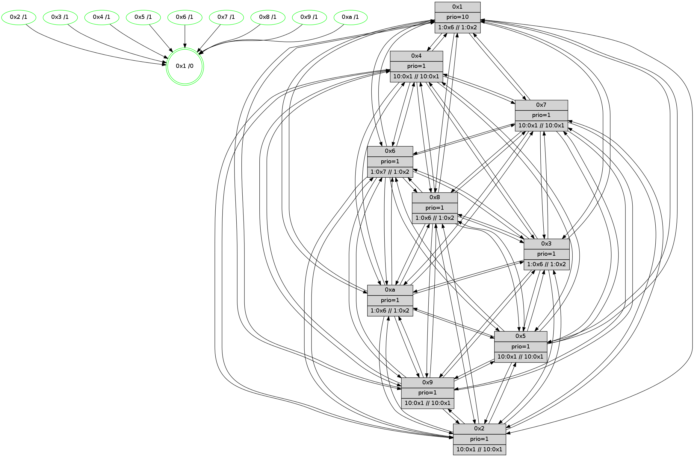

>> << IDX [start] -100 -25 -5 +0 +5 +25 +100 [605.005053997]
 Previous packets
----------------------------------------------------------------------
600.196274 beacon01(faad) #0 coord=01,02,03,04,05,06,07,0a,09,08 cycle=688.0ms assoc
-- color-indic=1 64 2e 9e
600.206256 beacon02(faad) #0 coord=01,02,03,04,05,06,07,0a,09,08 cycle=688.0ms assoc 64 bd af
600.216256 beacon03(faad) #0 coord=01,02,03,04,05,06,07,0a,09,08 cycle=688.0ms assoc 64 c7 e2
600.226256 beacon04(faad) #0 coord=01,02,03,04,05,06,07,0a,09,08 cycle=688.0ms assoc 64 b0 08
600.236256 beacon05(faad) #0 coord=01,02,03,04,05,06,07,0a,09,08 cycle=688.0ms assoc 64 ca 45
600.246257 beacon06(faad) #0 coord=01,02,03,04,05,06,07,0a,09,08 cycle=688.0ms assoc 64 44 92
600.256256 beacon07(faad) #0 coord=01,02,03,04,05,06,07,0a,09,08 cycle=688.0ms assoc 64 3e df
600.266261 beacon0a(faad) #0 coord=01,02,03,04,05,06,07,0a,09,08 cycle=688.0ms assoc 64 4f d4
600.276261 beacon09(faad) #0 coord=01,02,03,04,05,06,07,0a,09,08 cycle=688.0ms assoc 64 c1 03
600.286263 beacon08(faad) #0 coord=01,02,03,04,05,06,07,0a,09,08 cycle=688.0ms assoc 64 bb 4e
600.297477 [Hello(10): seq=318 sym=6,2,3,8,9,5,7,4,1 sysInfo= stat=6:2,3,0,0/2:1,12,3,0/3:0,13,3,1/8:1,15,12,4/9:0,3,9,3/5:2,6,8,5/7:13,5,11,2/4:15,5,8,6/1:15,0,6,0]
600.300506 [Hello(3): seq=386 sym=1,7,6,2,4,8,9,10,5 sysInfo=coloring-mode-on,ColoringModeIndicationCalled stat=1:3,5,10,0/7:12,10,10,3/6:3,12,9,5/2:8,4,11,6/4:9,2,11,4/8:5,15,7,0/9:14,3,14,5/10:8,4,8,3/5:9,6,11,5]
600.303383 [Hello(5): seq=386 sym=7,6,4,3,1,9,8,10,2 sysInfo= stat=7:13,5,1,3/6:0,2,0,4/4:8,5,10,3/3:5,12,7,2/1:2,7,6,0/9:5,7,11,3/8:5,10,8,3/10:5,14,12,4/2:11,11,11,3]
600.306150 [Color(2) seq=43 @0:0 prio=1 >10.@1,1.@4,1.@6,1.@7 >>10.@1,1.@2,1.@3]
600.308111 [Hello(8): seq=329 sym=5,2,3,4,7,6,9,10,1 sysInfo=coloring-mode-on,ColoringModeIndicationCalled stat=5:6,8,10,5/2:3,14,2,0/3:0,0,11,6/4:6,3,13,5/7:9,6,15,4/6:2,4,12,5/9:14,2,14,4/10:9,11,9,5/1:9,5,8,0]
600.315175 [Hello(9): seq=329 sym=5,2,3,4,7,6,8,10,1 sysInfo=hasWarning stat=5:5,7,9,6/2:10,4,14,4/3:8,7,9,4/4:10,3,11,4/7:14,6,15,2/6:5,13,12,4/8:1,1,0,0/10:3,7,11,5/1:10,0,8,0]
600.317857 [Hello(4): seq=386 sym=5,7,6,2,3,9,8,10,1 sysInfo= stat=5:9,12,10,6/7:4,13,14,2/6:6,2,14,5/2:15,5,10,5/3:15,7,4,2/9:15,10,9,3/8:5,5,14,5/10:11,14,12,4/1:14,1,8,0]
600.321247 [Color(1) seq=66 @0:0 prio=10 >1.@6,1.@7,1.@8,1.@9 >>1.@2,1.@3,1.@4]
----------------------------------------------------------------------
600.984405 beacon01(faad) #0 coord=01,02,03,04,05,06,07,0a,09,08 cycle=688.0ms assoc
-- color-indic=1 64 1a 86
600.994388 beacon02(faad) #0 coord=01,02,03,04,05,06,07,0a,09,08 cycle=688.0ms assoc 64 89 b7
601.004388 beacon03(faad) #0 coord=01,02,03,04,05,06,07,0a,09,08 cycle=688.0ms assoc 64 f3 fa
601.014389 beacon04(faad) #0 coord=01,02,03,04,05,06,07,0a,09,08 cycle=688.0ms assoc 64 84 10
601.024389 beacon05(faad) #0 coord=01,02,03,04,05,06,07,0a,09,08 cycle=688.0ms assoc 64 fe 5d
601.034388 beacon06(faad) #0 coord=01,02,03,04,05,06,07,0a,09,08 cycle=688.0ms assoc 64 70 8a
601.044390 beacon07(faad) #0 coord=01,02,03,04,05,06,07,0a,09,08 cycle=688.0ms assoc 64 0a c7
601.054393 beacon0a(faad) #0 coord=01,02,03,04,05,06,07,0a,09,08 cycle=688.0ms assoc 64 7b cc
601.064394 beacon09(faad) #0 coord=01,02,03,04,05,06,07,0a,09,08 cycle=688.0ms assoc 64 f5 1b
601.074393 beacon08(faad) #0 coord=01,02,03,04,05,06,07,0a,09,08 cycle=688.0ms assoc 64 8f 56
601.087242 [Hello(1): seq=295 sym=4,2,9,5,10,3,8,6,7 sysInfo=coloring-mode-on,ColoringModeRequestCalled stat=4:1,12,1,6/2:1,7,0,6/9:13,15,5,6/5:9,6,1,7/10:8,11,2,5/3:0,1,7,8/8:4,12,6,5/6:10,7,4,4/7:1,14,6,7]
601.090282 [Color(10) seq=55 @0:0 prio=1 >1.@6,1.@7,1.@8,1.@9 >>1.@2,1.@3,1.@4]
601.092195 [Color(3) seq=66 @0:0 prio=1 >1.@6,1.@7,1.@8,1.@9 >>1.@2,1.@3,1.@4]
601.094332 [Color(8) seq=66 @0:0 prio=1 >1.@6,1.@7,1.@9,1.@a >>1.@2,1.@3,1.@4]
601.097261 [Hello(7): seq=386 sym=2,3,5,6,4,8,9,10,1 sysInfo= stat=2:13,7,0,7/3:9,1,0,7/5:11,0,13,8/6:0,1,0,0/4:14,10,15,5/8:8,6,0,3/9:5,12,0,7/10:12,2,15,5/1:8,7,7,0]
601.100080 [Color(7) seq=54 @0:0 prio=1 >10.@1,1.@4,1.@6,1.@8 >>10.@1,1.@2,1.@3]
601.102197 [Color(4) seq=41 @0:0 prio=1 >10.@1,1.@2,1.@3,1.@5 >>10.@1,1.@4,1.@6]
601.105090 [Color(5) seq=50 @0:0 prio=1 >10.@1,1.@4,1.@6,1.@7 >>10.@1,1.@2,1.@3]
601.107148 [Hello(2): seq=383 sym=4,5,7,6,3,9,8,10,1 sysInfo=hasWarning stat=4:13,11,11,2/5:8,12,8,4/7:2,14,14,3/6:6,4,14,4/3:5,9,6,1/9:2,3,9,1/8:7,14,6,2/10:1,0,8,3/1:5,3,6,0]
601.111167 [Hello(6): seq=386 sym=2,3,5,4,7,9,8,10,1 sysInfo=coloring-mode-on,ColoringModeIndicationCalled stat=2:8,13,2,4/3:14,4,15,5/5:15,0,13,7/4:11,2,14,5/7:15,14,14,3/9:11,1,0,6/8:15,15,13,4/10:1,4,1,5/1:8,11,5,0]
601.114005 [Color(6) seq=66 @0:0 prio=1 >1.@7,1.@8,1.@9,1.@a >>1.@2,1.@3,1.@4]
601.118340 [Color(9) seq=50 @0:0 prio=1 >10.@1,1.@4,1.@6,1.@7 >>10.@1,1.@2,1.@3]
----------------------------------------------------------------------
601.772538 beacon01(faad) #0 coord=01,02,03,04,05,06,07,0a,09,08 cycle=688.0ms assoc
-- color-indic=1 64 a6 83
601.782520 beacon02(faad) #0 coord=01,02,03,04,05,06,07,0a,09,08 cycle=688.0ms assoc 64 35 b2
601.792520 beacon03(faad) #0 coord=01,02,03,04,05,06,07,0a,09,08 cycle=688.0ms assoc 64 4f ff
601.802521 beacon04(faad) #0 coord=01,02,03,04,05,06,07,0a,09,08 cycle=688.0ms assoc 64 38 15
601.812522 beacon05(faad) #0 coord=01,02,03,04,05,06,07,0a,09,08 cycle=688.0ms assoc 64 42 58
601.822520 beacon06(faad) #0 coord=01,02,03,04,05,06,07,0a,09,08 cycle=688.0ms assoc 64 cc 8f
601.832522 beacon07(faad) #0 coord=01,02,03,04,05,06,07,0a,09,08 cycle=688.0ms assoc 64 b6 c2
601.842527 beacon0a(faad) #0 coord=01,02,03,04,05,06,07,0a,09,08 cycle=688.0ms assoc 64 c7 c9
601.852526 beacon09(faad) #0 coord=01,02,03,04,05,06,07,0a,09,08 cycle=688.0ms assoc 64 49 1e
601.862527 beacon08(faad) #0 coord=01,02,03,04,05,06,07,0a,09,08 cycle=688.0ms assoc 64 33 53
601.876476 [Color(1) seq=67 @0:0 prio=10 >1.@6,1.@7,1.@8,1.@9 >>1.@2,1.@3,1.@4]
601.878505 [Hello(10): seq=319 sym=6,2,3,8,9,5,7,4,1 sysInfo= stat=6:3,4,0,0/2:2,13,3,0/3:1,14,3,1/8:2,0,12,4/9:1,4,9,3/5:3,7,8,5/7:14,6,11,2/4:15,6,8,6/1:0,1,6,0]
601.881343 [Color(2) seq=44 @0:0 prio=1 >10.@1,1.@4,1.@6,1.@7 >>10.@1,1.@2,1.@3]
601.884397 [Hello(5): seq=387 sym=7,6,4,3,1,9,8,10,2 sysInfo= stat=7:13,5,1,3/6:1,3,0,4/4:9,5,10,3/3:5,12,7,2/1:3,8,6,0/9:6,8,11,3/8:6,10,8,3/10:5,14,12,4/2:12,12,11,3]
601.888069 [Hello(8): seq=330 sym=5,2,3,4,7,6,9,10,1 sysInfo=coloring-mode-on,ColoringModeIndicationCalled stat=5:6,9,10,5/2:4,14,2,0/3:0,0,11,6/4:6,4,13,5/7:10,7,15,4/6:3,5,12,5/9:15,3,14,4/10:9,11,9,5/1:10,6,8,0]
----------------------------------------------------------------------
602.560669 beacon01(faad) #0 coord=01,02,03,04,05,06,07,0a,09,08 cycle=688.0ms assoc
-- color-indic=1 64 62 8d
602.570650 beacon02(faad) #0 coord=01,02,03,04,05,06,07,0a,09,08 cycle=688.0ms assoc 64 f1 bc
602.580651 beacon03(faad) #0 coord=01,02,03,04,05,06,07,0a,09,08 cycle=688.0ms assoc 64 8b f1
602.590652 beacon04(faad) #0 coord=01,02,03,04,05,06,07,0a,09,08 cycle=688.0ms assoc 64 fc 1b
602.600651 beacon05(faad) #0 coord=01,02,03,04,05,06,07,0a,09,08 cycle=688.0ms assoc 64 86 56
602.610651 beacon06(faad) #0 coord=01,02,03,04,05,06,07,0a,09,08 cycle=688.0ms assoc 64 08 81
602.620654 beacon07(faad) #0 coord=01,02,03,04,05,06,07,0a,09,08 cycle=688.0ms assoc 64 72 cc
602.630656 beacon0a(faad) #0 coord=01,02,03,04,05,06,07,0a,09,08 cycle=688.0ms assoc 64 03 c7
602.640655 beacon09(faad) #0 coord=01,02,03,04,05,06,07,0a,09,08 cycle=688.0ms assoc 64 8d 10
602.650658 beacon08(faad) #0 coord=01,02,03,04,05,06,07,0a,09,08 cycle=688.0ms assoc 64 f7 5d
602.663202 [Hello(1): seq=296 sym=4,2,9,5,10,3,8,6,7 sysInfo=coloring-mode-on,ColoringModeRequestCalled stat=4:1,13,1,6/2:2,8,0,6/9:13,0,5,6/5:10,7,1,7/10:9,12,2,5/3:1,2,7,8/8:5,13,6,5/6:11,8,4,4/7:2,15,6,7]
602.665933 [Hello(7): seq=387 sym=2,3,5,6,4,8,9,10,1 sysInfo= stat=2:14,8,0,7/3:10,1,0,7/5:12,1,13,8/6:1,2,0,0/4:14,11,15,5/8:9,6,0,3/9:5,13,0,7/10:13,2,15,5/1:9,8,7,0]
602.668608 [Color(4) seq=42 @0:0 prio=1 >10.@1,1.@2,1.@3,1.@5 >>10.@1,1.@4,1.@6]
602.670997 [Color(9) seq=51 @0:0 prio=1 >10.@1,1.@4,1.@6,1.@7 >>10.@1,1.@2,1.@3]
602.673706 [Color(7) seq=55 @0:0 prio=1 >10.@1,1.@4,1.@6,1.@8 >>10.@1,1.@2,1.@3]
602.676108 [Color(3) seq=67 @0:0 prio=1 >1.@6,1.@7,1.@8,1.@9 >>1.@2,1.@3,1.@4]
602.678644 [Color(8) seq=67 @0:0 prio=1 >1.@6,1.@7,1.@9,1.@a >>1.@2,1.@3,1.@4]
602.684885 [Hello(6): seq=387 sym=2,3,5,4,7,9,8,10,1 sysInfo=coloring-mode-on,ColoringModeIndicationCalled stat=2:8,14,2,4/3:15,4,15,5/5:0,0,13,7/4:11,2,14,5/7:15,14,14,3/9:11,2,0,6/8:0,15,13,4/10:2,4,1,5/1:9,12,5,0]
602.688005 [Color(6) seq=67 @0:0 prio=1 >1.@7,1.@8,1.@9,1.@a >>1.@2,1.@3,1.@4]
602.690543 [Color(10) seq=56 @0:0 prio=1 >1.@6,1.@7,1.@8,1.@9 >>1.@2,1.@3,1.@4]
602.697198 [Color(5) seq=51 @0:0 prio=1 >10.@1,1.@4,1.@6,1.@7 >>10.@1,1.@2,1.@3]
602.701504 [Hello(2): seq=384 sym=4,5,7,6,3,9,8,10 sysInfo=hasWarning stat=4:13,11,11,2/5:9,12,8,4/7:2,14,14,3/6:7,5,14,4/3:5,9,6,1/9:2,4,9,1/8:8,14,6,2/10:1,0,8,3]
----------------------------------------------------------------------
603.348802 beacon01(faad) #0 coord=01,02,03,04,05,06,07,0a,09,08 cycle=688.0ms assoc
-- color-indic=1 64 de 88
603.358785 beacon02(faad) #0 coord=01,02,03,04,05,06,07,0a,09,08 cycle=688.0ms assoc 64 4d b9
603.368785 beacon03(faad) #0 coord=01,02,03,04,05,06,07,0a,09,08 cycle=688.0ms assoc 64 37 f4
603.378784 beacon04(faad) #0 coord=01,02,03,04,05,06,07,0a,09,08 cycle=688.0ms assoc 64 40 1e
603.388784 beacon05(faad) #0 coord=01,02,03,04,05,06,07,0a,09,08 cycle=688.0ms assoc 64 3a 53
603.398785 beacon06(faad) #0 coord=01,02,03,04,05,06,07,0a,09,08 cycle=688.0ms assoc 64 b4 84
603.408785 beacon07(faad) #0 coord=01,02,03,04,05,06,07,0a,09,08 cycle=688.0ms assoc 64 ce c9
603.418791 beacon0a(faad) #0 coord=01,02,03,04,05,06,07,0a,09,08 cycle=688.0ms assoc 64 bf c2
603.428790 beacon09(faad) #0 coord=01,02,03,04,05,06,07,0a,09,08 cycle=688.0ms assoc 64 31 15
603.438791 beacon08(faad) #0 coord=01,02,03,04,05,06,07,0a,09,08 cycle=688.0ms assoc 64 4b 58
603.450652 [Hello(4): seq=388 sym=5,7,6,2,3,9,8,10,1 sysInfo= stat=5:10,14,10,6/7:4,14,14,2/6:8,4,14,5/2:1,6,10,5/3:15,8,4,2/9:15,12,9,3/8:6,6,14,5/10:12,15,12,4/1:0,3,8,0]
603.453665 [Hello(9): seq=331 sym=5,2,3,4,7,6,8,10,1 sysInfo=hasWarning stat=5:6,8,9,6/2:11,5,14,4/3:8,8,9,4/4:11,3,11,4/7:14,7,15,2/6:6,14,12,4/8:2,2,0,0/10:4,8,11,5/1:12,2,8,0]
603.457340 [Color(2) seq=45 @0:0 prio=1 >10.@1,1.@4,1.@6,1.@7 >>10.@1,1.@2,1.@3]
603.459495 [Hello(3): seq=388 sym=1,7,6,2,4,8,9,10,5 sysInfo=coloring-mode-on,ColoringModeIndicationCalled stat=1:5,7,10,0/7:13,11,10,3/6:5,14,9,5/2:10,6,11,6/4:9,3,11,4/8:7,1,7,0/9:15,4,14,5/10:9,5,8,3/5:11,8,11,5]
603.463059 [Color(1) seq=68 @0:0 prio=10 >1.@6,1.@7,1.@8,1.@9 >>1.@2,1.@3,1.@4]
603.467480 [Hello(10): seq=320 sym=6,2,3,8,9,5,7,4,1 sysInfo= stat=6:3,4,0,0/2:3,14,3,0/3:1,14,3,1/8:3,0,12,4/9:1,4,9,3/5:4,8,8,5/7:14,6,11,2/4:15,6,8,6/1:1,1,6,0]
603.470073 [Hello(8): seq=331 sym=5,2,3,4,7,6,9,10,1 sysInfo=coloring-mode-on,ColoringModeIndicationCalled stat=5:6,10,10,5/2:5,14,2,0/3:0,0,11,6/4:6,4,13,5/7:10,7,15,4/6:4,6,12,5/9:15,3,14,4/10:9,12,9,5/1:11,6,8,0]
603.472995 [Hello(5): seq=388 sym=7,6,4,3,1,9,8,10,2 sysInfo= stat=7:13,5,1,3/6:1,3,0,4/4:9,5,10,3/3:5,12,7,2/1:4,8,6,0/9:6,8,11,3/8:7,10,8,3/10:5,14,12,4/2:13,12,11,3]
----------------------------------------------------------------------
604.136933 beacon01(faad) #0 coord=01,02,03,04,05,06,07,0a,09,08 cycle=688.0ms assoc
-- color-indic=1 64 ca e6
604.146917 beacon02(faad) #0 coord=01,02,03,04,05,06,07,0a,09,08 cycle=688.0ms assoc 64 59 d7
604.156916 beacon03(faad) #0 coord=01,02,03,04,05,06,07,0a,09,08 cycle=688.0ms assoc 64 23 9a
604.166918 beacon04(faad) #0 coord=01,02,03,04,05,06,07,0a,09,08 cycle=688.0ms assoc 64 54 70
604.176916 beacon05(faad) #0 coord=01,02,03,04,05,06,07,0a,09,08 cycle=688.0ms assoc 64 2e 3d
604.186917 beacon06(faad) #0 coord=01,02,03,04,05,06,07,0a,09,08 cycle=688.0ms assoc 64 a0 ea
604.196917 beacon07(faad) #0 coord=01,02,03,04,05,06,07,0a,09,08 cycle=688.0ms assoc 64 da a7
604.206920 beacon0a(faad) #0 coord=01,02,03,04,05,06,07,0a,09,08 cycle=688.0ms assoc 64 ab ac
604.216925 beacon09(faad) #0 coord=01,02,03,04,05,06,07,0a,09,08 cycle=688.0ms assoc 64 25 7b
604.226921 beacon08(faad) #0 coord=01,02,03,04,05,06,07,0a,09,08 cycle=688.0ms assoc 64 5f 36
604.238138 [Hello(2): seq=385 sym=4,5,7,6,3,9,8,10 sysInfo=hasWarning stat=4:14,11,11,2/5:10,12,8,4/7:2,14,14,3/6:7,5,14,4/3:6,9,6,1/9:2,4,9,1/8:9,14,6,2/10:2,0,8,3]
604.241208 [Color(8) seq=68 @0:0 prio=1 >1.@6,1.@7,1.@9,1.@a >>1.@2,1.@3,1.@4]
604.243161 [Color(4) seq=43 @0:0 prio=1 >10.@1,1.@2,1.@3,1.@5 >>10.@1,1.@4,1.@6]
604.245642 [Color(5) seq=52 @0:0 prio=1 >10.@1,1.@4,1.@6,1.@7 >>10.@1,1.@2,1.@3]
604.247565 [Color(10) seq=57 @0:0 prio=1 >1.@6,1.@7,1.@8,1.@9 >>1.@2,1.@3,1.@4]
604.250828 [Hello(1): seq=297 sym=4,2,9,5,10,3,8,6,7 sysInfo=coloring-mode-on,ColoringModeRequestCalled stat=4:2,14,1,6/2:3,8,0,6/9:13,1,5,6/5:11,8,1,7/10:10,13,2,5/3:1,3,7,8/8:6,14,6,5/6:12,9,4,4/7:3,0,6,7]
604.253968 [STC(1) #0.38 tree-change,inconsistent-stability,stable,to-color d=0]
604.256806 [Color(3) seq=68 @0:0 prio=1 >1.@6,1.@7,1.@8,1.@9 >>1.@2,1.@3,1.@4]
604.259077 PARSE ERROR************************
Traceback (most recent call last):
File "PacketAnalysis.py", line 167, in showOperaPacket
structPacket = OperaPacketParse.parsePacket(rawPacket)
File "../../pkg-python/HipSens/Core/OperaPacketParse.py", line 461, in parsePacket
return parseHelloMessage(data)
File "../../pkg-python/HipSens/Core/OperaPacketParse.py", line 127, in parseHelloMessage
assert struct.calcsize("H")*len(neighAddrList) == len(linkList)
AssertionError
48 34 07 00 01 84 00 02 02 12 02 00 03 00 05 00 06 00 04 00 08 00 09 00 0a 00 01 00 53 04 00 00 00 00 4c 12 70 9f 70 2b 8d 2d 00 32 5f bf 30 7a 70 d6 5f 3e 07 9a 4c 08
604.262562 [Color(9) seq=52 @0:0 prio=1 >10.@1,1.@4,1.@6,1.@7 >>10.@1,1.@2,1.@3]
604.267011 [Hello(6): seq=388 sym=2,3,5,4,7,9,8,10,1 sysInfo=coloring-mode-on,ColoringModeIndicationCalled stat=2:9,15,2,4/3:0,4,15,5/5:1,1,13,7/4:12,2,14,5/7:15,14,14,3/9:12,2,0,6/8:1,15,13,4/10:3,5,1,5/1:10,13,5,0]
604.271757 [Color(6) seq=68 @0:0 prio=1 >1.@7,1.@8,1.@9,1.@a >>1.@2,1.@3,1.@4]
604.274008 [Color(7) seq=56 @0:0 prio=1 >10.@1,1.@4,1.@6,1.@8 >>10.@1,1.@2,1.@3]
----------------------------------------------------------------------
604.925067 beacon01(faad) #0 coord=01,02,03,04,05,06,07,0a,09,08 cycle=688.0ms assoc
-- color-indic=1 64 76 e3
604.935050 beacon02(faad) #0 coord=01,02,03,04,05,06,07,0a,09,08 cycle=688.0ms assoc 64 e5 d2
604.945050 beacon03(faad) #0 coord=01,02,03,04,05,06,07,0a,09,08 cycle=688.0ms assoc 64 9f 9f
604.955049 beacon04(faad) #0 coord=01,02,03,04,05,06,07,0a,09,08 cycle=688.0ms assoc 64 e8 75
604.965050 beacon05(faad) #0 coord=01,02,03,04,05,06,07,0a,09,08 cycle=688.0ms assoc 64 92 38
604.975050 beacon06(faad) #0 coord=01,02,03,04,05,06,07,0a,09,08 cycle=688.0ms assoc 64 1c ef
604.985051 beacon07(faad) #0 coord=01,02,03,04,05,06,07,0a,09,08 cycle=688.0ms assoc 64 66 a2
604.995055 beacon0a(faad) #0 coord=01,02,03,04,05,06,07,0a,09,08 cycle=688.0ms assoc 64 17 a9